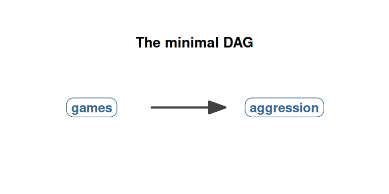
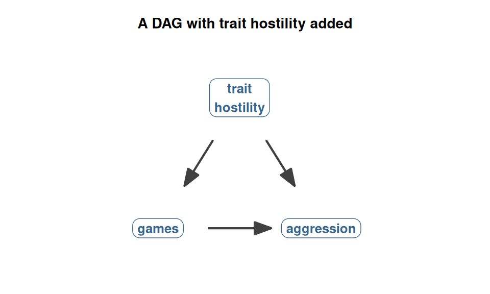
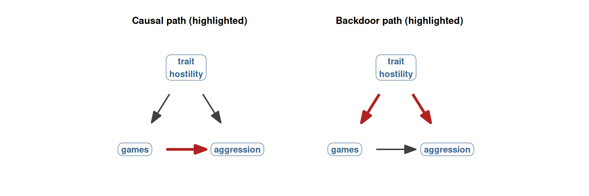
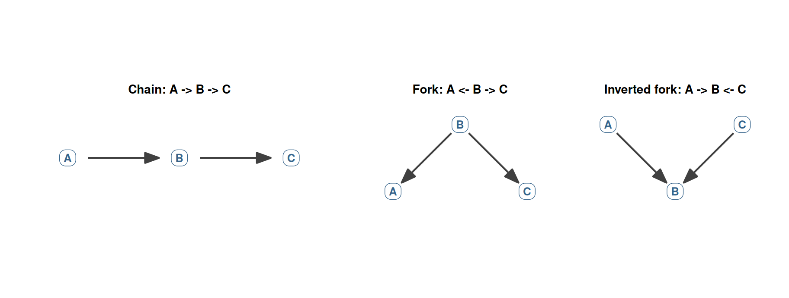

42 DAGs: drawing your causal assumptions
Chapter 41 closed by acknowledging that many research questions cannot be answered by random assignment. When the treatment is something we cannot manipulate (a personality trait, a life event, a long-term lifestyle pattern), we are stuck with observational data, and the observed group mean difference may or may not be the average treatment effect. We need a way to reason carefully about which differences between groups reflect real causal effects and which reflect pre-existing differences in the groups themselves.
The conceptual tool for this reasoning is the directed acyclic graph, or DAG. A DAG is a picture of your causal assumptions. It is not derived from the data and it cannot be tested directly against the data. It is a diagram of what you believe causes what, drawn before you run the regression, and it determines what set of variables you should put on the right-hand side of lm() to recover a causal estimate.
This chapter introduces DAGs in the simplest possible way. We will see what a DAG is (just nodes and arrows), how to read one (by tracing paths), and what kind of statement a DAG actually makes (about your beliefs, not about the data). Chapter 43 will then introduce the three classic third-variable structures that DAGs let us see clearly. Chapter 44 will tie them together into the procedure for choosing the right set of control variables.
DAGs in their modern form for psychology come from Pearl (1995) and were brought to applied psychological research by Rohrer (2018). The chapter follows Rohrer’s framing closely.
42.1 What a DAG is
A DAG has two ingredients:
- Nodes: the variables. Each variable in your causal model is one node. Draw them as labels or as circles with labels inside.
- Arrows: causal claims. An arrow from variable A to variable B means “A causes B.” The arrow has a direction; A → B is different from B → A.
That is the entire content of a DAG. Two ingredients, no more.
The “directed” in “directed acyclic graph” refers to the fact that the arrows have a direction (one-headed, never two-headed). The “acyclic” means that the arrows do not form a loop; you cannot follow arrows from one variable back to itself, directly or indirectly. A variable does not cause itself.
The simplest DAG we can draw for vgames_study has just two nodes (the violent-game variable and the aggression variable) and one arrow:
This DAG says: the violent game causes aggression. That is the substantive claim we want our study to support. The arrow is the causal effect we want to estimate. The DAG does not say what magnitude the effect is, or whether the relationship is linear or curved; it just says “the violent game causally affects aggression in some way.”
For the rest of the chapter, when we draw a DAG, we adopt the convention that the arrow we want to estimate (the causal effect of X on Y) is the one we have written explicitly. Other arrows we add represent additional causal beliefs about other variables in the system.
42.2 Building up the DAG
The minimal DAG is rarely the right DAG. In reality, there are usually other variables involved that affect both the predictor and the outcome. To do justice to the situation, we need to extend the DAG to include them.
Suppose we believe that trait hostility also matters: hostile people tend to choose violent games (when given the choice) and tend to score higher on aggression measures. Both arrows go out of trait hostility, one into games and one into aggression. We add trait hostility as a node:

This is a much more substantively realistic DAG, and we will revisit it in Chapter 43. For now, notice what it shows. There are now multiple ways the variables games and aggression can be statistically connected:
- The direct causal arrow: games → aggression. This is the real causal effect we want.
- A “back way around”: games ← trait hostility → aggression. Trait hostility causes both, so it produces a statistical connection between the two even if games has no causal effect on aggression at all.
The second of these is a backdoor path: it goes “out the back” of games (against an arrow that points into games) and reaches aggression via some other route. The path carries a spurious association between games and aggression, induced by the common cause. If we want a clean causal estimate, we need to figure out how to suppress the backdoor path while keeping the direct causal path open.
This is the central project of the rest of Section 6.
42.3 Paths in a DAG
A path between two variables is any sequence of arrows that connects them. The arrows can go in either direction along the path; we trace the path by walking from node to node regardless of which way each arrow points.
In the DAG above, the path between games and aggression can be either of these:
- Direct causal path: games → aggression. One arrow, forward.
- Backdoor path: games ← trait hostility → aggression. Two arrows, the first one points into games (which is what makes it a backdoor) and the second one points out of trait hostility into aggression.
We need to distinguish two qualitatively different kinds of paths.
Causal paths. A causal path is one that follows arrows in the forward direction throughout. It starts at X and reaches Y by always going with the arrows, never against them. A causal path transmits a causal association: if X changes, Y changes in the direction the path implies. We want to leave causal paths open, because they carry the real effect we are trying to measure.
Backdoor paths. A backdoor path is one that starts with an arrow pointing into X (not out of it) and reaches Y somehow, possibly via additional variables. The first segment of a backdoor path goes against the direction of the arrow on X. Backdoor paths transmit spurious associations: changes in the common cause produce co-movement in X and Y, even when X has no causal effect on Y. We want to close backdoor paths, because they are sources of bias.
The figure below highlights the two kinds of paths in the trait-hostility DAG.

The left panel shows the causal path: the single arrow going from games to aggression. The right panel shows the backdoor path: two arrows, both emanating from trait hostility. Both paths transmit a statistical association between games and aggression. Only the first is a causal effect.
The whole game of causal inference from observational data is now stated as follows. Keep the causal paths open; close the backdoor paths. If we can do that, the association we measure equals the causal effect.
42.4 How “controlling for” relates to paths
Here is the link to the regression machinery you have been using. When you include a variable in a regression by adding it to the right-hand side of lm() (lm(aggression ~ condition + trait_hostility)), you are statistically controlling for that variable. The technical operation is to compute the slope on the condition variable holding trait hostility constant. In DAG terms, controlling for a variable is said to block the paths that pass through it.
In the trait-hostility DAG above, controlling for trait hostility blocks the backdoor path games ← trait hostility → aggression. The path passes through the trait hostility node, and conditioning on (holding constant) that node closes the path. The path no longer transmits any association.
This is the basic idea of why “adding controls” can fix a confounding problem. The control variable closes the backdoor path that was creating the spurious association, leaving only the direct causal path open. The coefficient on the focal predictor then reflects the causal effect alone.
But, and this is the warning that Chapter 43 will develop carefully, blocking is not always good. Sometimes the path passing through a variable is the causal path we want to keep open (which is the case for mediators), and blocking it kills part of the effect we are trying to measure. Sometimes blocking a variable does not close a path but opens one that was previously closed (which is the case for colliders), creating a fake association out of nothing.
This is the central message: whether to control for a variable depends on its causal role in the DAG. The role is determined by which way the arrows point. The data alone cannot tell us this; it has to come from our background knowledge. The DAG makes that knowledge explicit and checkable.
42.5 The three elementary causal structures
Most of the DAG patterns you will ever encounter are built from three simple sub-structures. Rohrer (2018) calls them chains, forks, and inverted forks. We will give each one its own DAG and describe what kind of association it transmits.

Chain (A → B → C). One arrow flows from A to B, then another from B to C. A chain transmits a causal association between the endpoints (A causally affects C via B). If you change A, B changes (caused by A), and C changes (caused by the new B). When B sits on a chain from X to Y and we want the total causal effect of X on Y, we do not want to block B, because that would kill part of the effect.
Fork (A ← B → C). B has arrows pointing out to both A and C. A fork transmits an association between A and C, but the association is not causal: it reflects the common cause B, not any causal relationship between A and C themselves. Forks are the structure of confounding. When B sits on a fork between X and Y in a DAG, we do want to block B, because that closes the backdoor path.
Inverted fork (A → B ← C). Both A and C have arrows pointing into B. B is the common effect of A and C. The inverted fork does not transmit any association between A and C; they are causally unrelated and statistically independent if B is left alone. The surprising fact is that controlling for B opens an association between A and C that did not exist before. Inverted forks are the structure of collider bias, and they are the reason why “control for everything” is dangerous. Chapter 43 develops this in detail.
These three structures are exhaustive. Any path between two variables, however long, breaks down into chains, forks, and inverted forks. Once you know how each structure transmits association, you can analyze the whole DAG by analyzing each path piece by piece.
42.6 What a DAG is a statement about
A common misunderstanding when first encountering DAGs is to think of them as something derived from the data. They are not. A DAG is a statement about causal beliefs. It encodes the structure of causes you bring to the analysis, based on theory, prior research, and substantive knowledge of the problem.
Two DAGs can be consistent with the same observed data:
- Story 1: games → aggression. The violent game causally raises aggression.
- Story 2: aggression → games. People feeling more aggressive choose the violent game.
Both stories produce a positive correlation between game choice and aggression in observational data. The data cannot distinguish them. To choose one over the other, you have to bring in causal knowledge from outside the data: temporal ordering (in vgames_study, the game came before the aggression measurement, so games → aggression is the temporally plausible direction), substantive theory, prior experiments. The DAG is the place where you make those external commitments explicit.
This is sometimes worrying to people who want statistics to be “purely data-driven.” The reality is that causal claims cannot be purely data-driven. You always need to bring causal knowledge to the data; the question is whether you bring it explicitly (as in a DAG) or implicitly (hidden in the choice of which variables to control for in a regression). The DAG makes the assumptions visible, so that you, your collaborators, and your readers can examine and challenge them. Explicit assumptions are better than hidden assumptions, even when the assumptions themselves are debatable.
This is what Rohrer (2018, p. 28) emphasizes: drawing a DAG forces you to commit to specific causal claims and to make them visible. The DAG can be wrong, but its wrongness can be discussed and refined. A hidden assumption, by contrast, cannot.
42.7 A practical workflow
The procedure for using DAGs in an applied analysis is straightforward. We will develop it across the next two chapters, but the overall shape is:
Draw the DAG. Before any analysis, sit down with what you know about the variables in your study and draw a DAG showing what you believe causes what. Include any variables that might be related to both your focal X and your Y.
Identify the focal causal arrow. Mark the arrow whose magnitude you want to estimate (typically X → Y).
Identify the backdoor paths. List all the paths from X to Y that start with an arrow into X. These are the spurious paths you need to close.
Choose an adjustment set. Find a set of variables that, when controlled for in the regression, blocks every backdoor path without blocking the focal causal arrow and without opening any collider paths. Chapter 44 develops the precise rule for this (the backdoor criterion).
Run the regression. Fit
lm(Y ~ X + <adjustment set>). Under the assumptions encoded in the DAG, the coefficient on X is now an estimate of the causal effect.Honestly report the assumptions. State the DAG you assumed, the adjustment set you used, and the threats to validity (variables that should have been measured but were not, plausible alternative DAGs that would change your conclusions). The DAG makes this reporting explicit.
The next two chapters work through steps 2 to 5 in detail. The point of this chapter is to establish that a DAG is the right starting point for thinking about any observational causal question.
42.8 Check your understanding
1. What is a directed acyclic graph (DAG)?
2. What is a causal path in a DAG?
3. What is a backdoor path between two variables in a DAG?
4. What does it mean to “control for” a variable in the regression framework, in terms of paths in a DAG?
5. What are the three elementary causal structures in a DAG, and how do they transmit (or block) statistical associations?
6. What is the epistemic status of a DAG (where does it come from, and what is it a statement about)?
42.9 References
Pearl, J. (1995). Causal diagrams for empirical research. Biometrika, 82(4), 669-688. https://doi.org/10.2307/2337329
Pearl, J., Glymour, M., & Jewell, N. P. (2016). Causal inference in statistics: A primer. Wiley.
Rohrer, J. M. (2018). Thinking clearly about correlations and causation: Graphical causal models for observational data. Advances in Methods and Practices in Psychological Science, 1(1), 27-42. https://doi.org/10.1177/2515245917745629